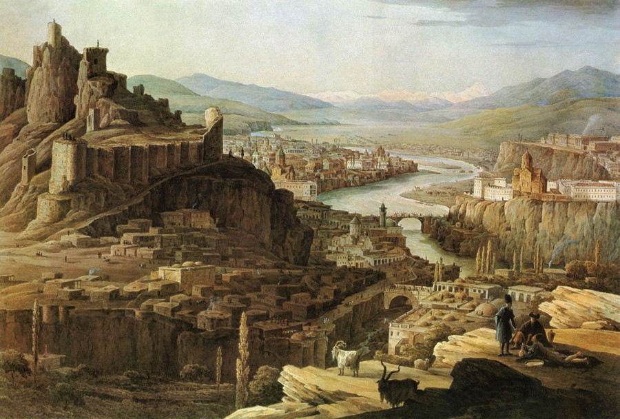
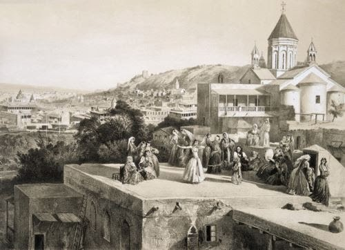
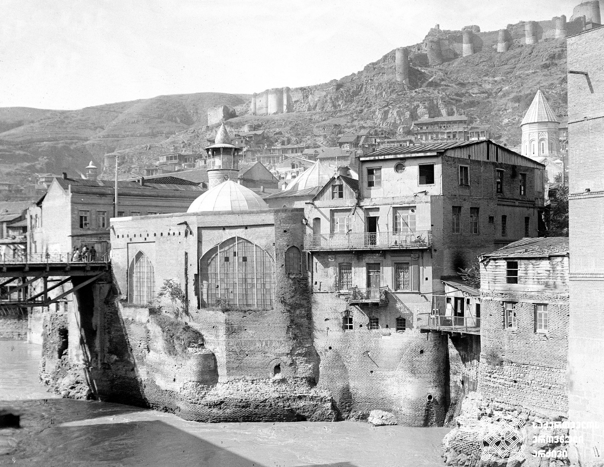

თბილისის ისტორია
დედაქალაქი და მუნიციპალიტეტი საქართველოში; მდებარეობს აღმოსავლეთ საქართველოში, თბილისის ქვაბულში, მდინარე მტკვრის ორივე სანაპიროზე, ზღვის დონიდან 380–600 მ სიმაღლეზე, ჩრდილოეთით ესაზღვრება საგურამოს ქედის სამხრეთი მთისწინეთი, აღმოსავლეთით — ივრის ზეგნის ჩრდილო-დასავლეთი მონაკვეთი, დასავლეთით და სამხრეთით კი — თრიალეთის ქედის განშტოებები. ქალაქს 502 კმ² ფართობი უჭირავს და 1,152 მილიონზე მეტი მცხოვრები ჰყავს.

თბილისი კავკასიის რეგიონის მნიშვნელოვანი ინდუსტრიული, სოციალური და კულტურული ცენტრია და ბოლო დროს ერთ-ერთი უმნიშვნელოვანესი სატრანსპორტო კვანძი ხდება გლობალური ენერგომატარებლებისა და სავაჭრო პროექტებისთვის (ბაქო-თბილისი-ჯეიჰანის ნავთობსადენი და ბაქო-თბილისი-ერზერუმის გაზსადენი). ქალაქი ისტორიული აბრეშუმის დიდი გზის ერთ-ერთ მარშრუტზე მდებარეობს და მნიშვნელოვანი სავაჭრო/სატრანზიტო ცენტრის პოზიცია უჭირავს რუსეთის ჩრდილო კავკასიას, თურქეთსა და ტრანსკავკასიის სომხეთისა და აზერბაიჯანის რესპუბლიკების გადაკვეთაზე სტრატეგიული მდებარეობით. არც თუ ისე დიდი ხნის წინ თბილისი იყო გახმაურებული ვარდების რევოლუციის ეპიცენტრი, რომელიც ქალაქის თავისუფლების მოედანსა და მის შემოგარენში მოხდა 2003 წლის საპარლამენტო არჩევნების შედეგების გაყალბების გამო და რომელსაც შედეგად იმდროინდელი საქართველოს პრეზიდენტის ედუარდ შევარდნაძის გადადგომა მოჰყვა.

თბილისის ძველი სახელწოდება იყო ტფილისი. ადრინდელ ქართულ წერილობით ძეგლებში სწორედ ასეთი ფორმითაა ის დამოწმებული. მაგ. ევსტათი მცხეთელის აბო ტფილელის წამებასასა და „მოქცევაო ქართლისაოს“ ტექსტებში. საქართველოს დედაქალაქის ძველი ფორმიდან, ტფილისიდან წარმოსდგება მისი სახელი მეზობელთა ენებზე.

არქეოლოგიური გათხრებით დასტურდება, რომ თბილისის ტერიტორია დასახლებული ყოფილა ჯერ კიდევ ძვ. წ. IV ათასწლეულში. უძველესი წყაროსეული მოხსენიება განეკუთვნება IV საუკუნის II ნახევარს, როცა ამ ადგილებში მეფე ვარაზ-ბაკურის დროს ციხე ააგეს. IV საუკუნის დასასრულს თბილისი სპარსეთის მოხელის — პიტიახშის რეზიდენცია გახდა. V საუკუნის შუა წლებიდან კვლავ ქართლის მეფეთა ხელში გადავიდა. ვახტან გორგასალმა აღადგინა და გააშენა, ამიტომ იგი მიჩნეულია ქალაქის დამაარსებლად. ზოგიერთი ისტორიკოსის მტკიცებით მეფე ვახტანგ გორგასალი (რომელიც V საუკუნის მეორე ნახევარში მეფობდა) სინამდვილეში ქალაქის აღორძინებასა და აღმშენებლობაშია პასუხისმგებელი, მისი დაფუძნების ნაცვლად.